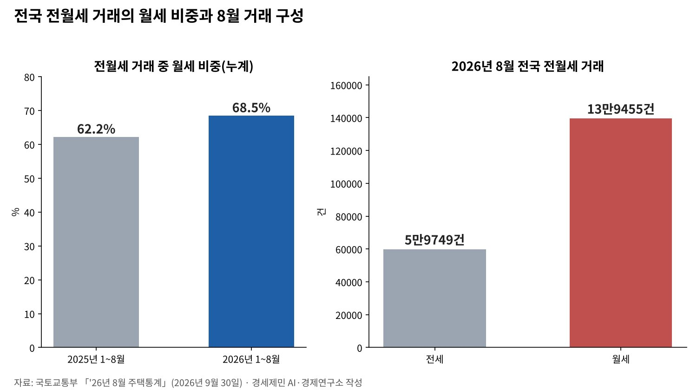
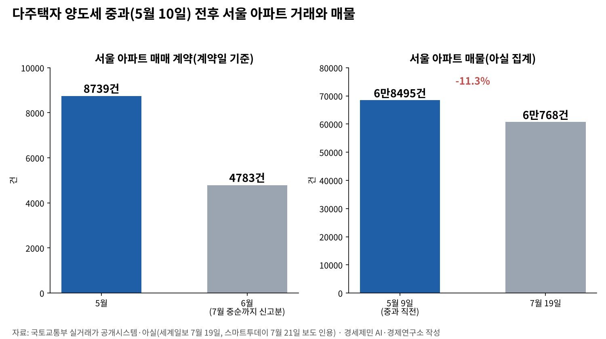

[한국경제 불편한 진실①] 임대차 열 건 중 일곱이 월세, 전세 끝물의 세입자
1~8월 전월세 거래 월세 비중 68.5%, 1년 새 6.3%포인트 올라
서울 아파트 평균 월세 166만1000원, 평균 전셋값 6억4100만원
다주택 양도세 중과 5월 10일 부활, 8월 세제개편안은 2년 한시 완화
올해 1~8월 전국 전월세 거래 가운데 월세가 68.5%다. 지난해 같은 기간 62.2%에서 6.3%포인트 올랐다. 국토교통부가 9월 30일 낸 8월 주택통계다. 8월 한 달 전세는 5만9749건, 월세는 13만9455건이었다.
서울은 값도 뛰었다. 한국부동산원 9월 조사에서 서울 아파트 평균 월세는 166만1000원, 평균 전셋값은 6억4100만원이다. 10월 중순 서울 아파트 전세 매물은 2만건 남짓으로 1년 전보다 12~14% 적다.
전세의 월세화는 금리와 보증사고, 세제와 공급이 함께 만든 흐름이다. 한 정책의 결과로만 읽으면 세입자가 선 자리를 놓친다. 세입자가 지금 어디에 서 있는지 국토교통부와 한국부동산원 통계로 짚는다.
임대차 열 건 중 일곱이 월세
월세 쏠림은 올해 내내 이어졌다. 7월까지 누계 월세 비중은 68.3%였고 8월까지는 68.5%로 올랐다. 8월 전월세 거래는 19만9204건으로 한 달 전보다 5.6% 줄었다. 전세가 12.7% 줄어 월세 감소폭 2.2%보다 컸다.
값도 오른다. 케이비(KB)국민은행 통계로 8월 서울 아파트 월세가격은 한 달 새 1.8% 올랐다. 수도권 월세는 10개월 연속 올랐다. 한국부동산원 기준 서울 아파트 중위 월세는 140만원이다.
전셋값도 같이 뛰었다. 한국부동산원 통계로 보면 서울 아파트 전셋값은 지난 1년 사이 10% 가까이 올랐다. 매매가격은 같은 기간 10% 넘게 올랐다. 주간 통계로 서울 아파트값은 10월 둘째 주까지 88주 연속 올랐다.

금리와 보증사고, 전세를 밀어낸 두 힘
전세는 집주인이 보증금을 굴려 이자를 얻는 계약이다. 금리가 낮으면 그 이자가 줄어 집주인은 월세를 고른다. 금리가 오르면 세입자의 전세대출 이자가 무거워진다. 어느 쪽이든 전세의 셈법이 흔들린다.
기준금리는 다시 오르고 있다. 한국은행은 7월 연 2.5%에서 2.75%로, 8월 27일 3%로 올렸다. 두 달 연속 인상은 3년 7개월 만이다. 10월 금융통화위원회는 22일 열린다. 시장은 동결을 점친다.
보증사고는 세입자의 믿음을 무너뜨렸다. 주택도시보증공사(HUG)의 전세보증금 반환보증 사고액은 2024년 4조4896억원으로 가장 많았다. 그해 공사가 세입자에게 대신 돌려준 돈은 3조9948억원이다.
사고는 줄었다. 2025년 사고액은 1조2446억원으로 한 해 전보다 72.3% 줄었다. 그러나 사고가 줄었다고 세입자가 전세로 돌아오지는 않았다. 올해 전세 거래는 월세보다 더 빠르게 줄고 있다.
갭투자 차단과 양도세 중과, 시장에서 일어난 일
정부는 2025년 10월 15일 서울 25개 자치구 전역과 경기 12곳을 규제지역과 토지거래허가구역으로 묶었다. 허가구역에서 산 집은 2년간 실거주해야 한다. 세입자 보증금을 끼고 사는 갭투자가 막혔다.
다주택자 양도세 중과 유예는 올해 5월 9일 끝났다. 5월 10일부터 조정대상지역 2주택자는 기본세율에 20%포인트를, 3주택 이상은 30%포인트를 더 낸다. 유예가 끝나기 전 매물이 쏟아졌다.
부동산 정보업체 아실 집계로 서울 아파트 매물은 1월 하순 5만6000여건에서 3월 하순 8만건 안팎으로 40% 가까이 늘었다. 5월 9일에는 6만8495건이었다. 5월 서울 아파트 매매 계약은 8739건으로 올해 가장 많았다.
중과가 시작되자 거래가 식었다. 7월 중순까지 신고된 6월 계약은 4783건으로 5월의 55% 수준이다. 매물은 7월 19일 6만768건으로 5월 9일보다 11.3% 줄었다. 내놓았던 집을 다시 거둔 다주택자가 많았다.

정부는 8월 3일 세제개편안에서 방향을 일부 틀었다. 2년 넘게 가진 조정대상지역 주택의 중과 가산세율을 2027년 5%포인트·10%포인트, 2028년 10%포인트·15%포인트로 낮춘다. 2029년에는 원래대로 돌아간다.
5월 10일 이후 중과세율로 낸 세금도 2027년 세율로 다시 셈해 돌려준다. 재정경제부는 팔려는 다주택자가 매물을 내놓게 하려는 조치라고 밝혔다. 개정안은 정기국회에 넘어갔고 국회 의결이 남았다.
보유세는 반대로 무거워진다. 종합부동산세 기본공제는 실거주 1주택이 12억원에서 14억원으로 오르고 비거주 1주택은 9억원으로 내려간다. 집을 쥐는 비용은 올리고 파는 비용은 한시로 낮춘 설계다.
줄어든 전세 매물, 늦게 오는 공급
매물로 나왔다 거둔 집이 전세로 돌아오지는 않았다. 아실 집계로 서울 아파트 전세 매물은 10월 10일 2만331건으로 1년 전보다 12.4% 적다. 15일 기준 집계로도 2만885건으로 14.3% 적다.
새 집도 늦게 온다. 국토교통부 통계로 올해 1~8월 전국 주택 준공은 1년 전보다 27.2% 줄었다. 수도권은 1~7월 7만1204가구로 38.7% 줄었다. 입주가 줄면 새 아파트에서 나오던 전세 물량도 준다.
인허가는 늘고 있다. 8월 서울 주택 인허가는 1만1306가구로 1년 전의 7배다. 다만 인허가에서 착공과 준공을 거쳐 입주까지는 몇 해가 걸린다. 그 사이 세입자는 지금의 전세 공백을 월세로 견뎌야 한다.
월세 세입자에게 돌아가는 몫
월세로 옮긴 세입자의 부담은 숫자로 드러난다. 서울 아파트 평균 월세 166만1000원을 열두 달 내면 한 해 1993만원이다. 지금 월세 세액공제를 받을 수 있는 연간 월세 한도 1000만원의 두 배에 가깝다.
정부는 8월 세제개편안에서 이 한도를 1200만원으로 올렸다. 총급여 8000만원 이하 청년은 소득 구간과 관계없이 17%를 공제받는다. 한도를 다 채운 청년의 공제액은 204만원이다. 청년 공제율은 2027년부터 세 해 동안 적용한다.
평균 월세를 내는 세입자라면 한도를 넘는 793만원은 공제 밖이다. 세액공제는 낼 세금이 있어야 받는다. 소득이 낮아 결정세액이 적은 세입자일수록 실제로 돌려받는 돈은 작아진다. 지원이 가장 필요한 층이 가장 적게 받는다.
월세는 매달 세입자의 노동소득을 집주인의 임대소득으로 옮긴다. 『21세기 자본』이 짚은 자본소득과 노동소득의 격차가 가계부에서 벌어진다. 주거비가 늘면 다른 소비가 준다. 동네 가게의 매출과 일자리도 그만큼 줄어든다.
물어야 할 것
경세제민 AI·경제 연구소는 세 곳에 묻는다. 국토교통부에는 전세에서 월세로 옮긴 가구의 소득 대비 주거비를 통계로 내놓는지 묻는다. 월세 비중과 평균 월세만으로는 소득 계층별 세입자의 부담을 알 수 없다.
재정경제부에는 한시 중과 완화로 나온 집이 임대 물량을 줄이는지 따지는 장치가 있는지 묻는다. 다주택자가 판 집에 새 주인이 들어가 살면 시장의 임대 물량은 오히려 준다. 매물이 늘어도 전세가 늘지는 않는다.
국회에는 낼 세금이 적은 세입자도 받을 수 있게 월세 지원 방식을 고칠지 묻는다. 세액공제 한도를 올리는 일과 공공임대를 서둘러 공급하는 일은 함께 따져야 한다. 지원의 크기만큼 누구에게 닿는지가 중요하다. 정기국회가 그 자리다.
전세는 금리가 높고 집값이 오르던 시대의 계약이었다. 그 계약이 저물자 세입자는 목돈 대신 매달의 월세로 값을 치른다. 투기를 막는 규제와 세입자를 받치는 장치는 다른 일이다. 앞의 것만 빠르고 뒤의 것이 더디면 비용은 세입자에게 남는다.
참고문헌
기관 자료
- 국토교통부 주택토지실 주택정책관 주택정책과, 「'26년 8월 주택통계 및 '25년 주택건설실적 통계 확정치 공표」, 2026년 9월 30일, KDI 경제교육·정보센터 게재. https://eiec.kdi.re.kr/policy/materialView.do?num=287561
- 국토교통부 주택토지실 주택정책관 주택정책과, 「2026년 7월 주택통계」, 2026년 8월 31일, KDI 경제교육·정보센터 게재. https://eiec.kdi.re.kr/policy/materialView.do?num=286032
- KB국민은행 부동산연구팀, 「KB주택시장 리뷰 2026년 9월호 - 월세시장」, 2026년 9월 16일. https://kbthink.com/realestate/insights/research/260916-5.html
- 삼일PwC, 「Tax News Flash」(2026년 세제개편안 요약), 2026년 8월 3일. https://www.pwc.com/kr/ko/insights/tax-news-flash/samilpwc_tax-news-flash_260803_kr.pdf
연구 논문과 보고서
- KB의 생각, 「한국은행 금융통화위원회 Comments」, 2026년 8월 28일. https://kbthink.com/investment/deepdive/tip/260828.html
- 토마 피케티, 『21세기 자본』, 장경덕 외 옮김, 글항아리, 2014년.
언론 보도
- 나광국, "서울 인허가 7배 급증…준공·거래 여전히 부진", 아이뉴스24, 2026년 9월 30일. https://inews24.com/view/2010407
- 박진아, "8월 서울 주택 인허가 7배 '쑥↑'…주택거래는 '뚝↓'", 뉴스토마토, 2026년 9월 30일. https://newstomato.com/ReadNews.aspx?no=1315177
- 임정희, "서울 주택 인허가·착공 늘었지만…아파트 거래 15.2% '뚝'", 데일리안, 2026년 8월 31일. https://www.dailian.co.kr/news/view/1684218
- 박연신, "서울 아파트 평균 13억7천만원…성북·노원 집값 상승 두드러져"(한국부동산원 9월 전국주택가격동향조사 인용), SBS Biz, 2026년 10월 15일. https://biz.sbs.co.kr/amp/article/20000340102
- 오진송, "1∼9월 서울 아파트 월세 비중 50% 첫 돌파…전세 급감 여파"(연합뉴스), 파이낸셜뉴스, 2026년 10월 20일. https://www.fnnews.com/news/202610200555507742
- 황진환, "하늘 높은줄 모르는 서울 아파트값…88주째 상승", 노컷뉴스, 2026년 10월 15일. https://nocutnews.co.kr/news/6592094
- VOA 한국어, "[한국은 지금] 10·15 부동산 대책 1년…서울 전셋값 첫 6억4천만 원 돌파", 2026년 10월. https://www.voakorea.com/a/korea-now-101526/8211630.html
- 우영탁·김광수, "[10·15 대책 1년] 매매 더 뛰고 전셋값은 4배 속도로 올랐다", 서울경제, 2026년 10월 12일. https://www.sedaily.com/article/20100206
- 김소현, "[속보]한은, 기준금리 3%로 인상…3년 7개월 만에 '백투백'", MTN, 2026년 8월 27일. https://news.mtn.co.kr/news-detail/2026082709290893716
- 김혜지, "10명 전원 "이달 동결"…11월부터 두 번 더 올려 3.5% 전망 [금통위 폴]"(뉴스1), 파이낸셜뉴스, 2026년 10월 18일. https://www.fnnews.com/news/202610180605279651
- 김소현, "HUG 전세보증금 대위변제 1.7조 원으로 급감…보증사고액도 72% 줄어 진정세", 경기일보, 2026년 1월 18일. https://www.kyeonggi.com/article/20260118580175
- 박수연, "HUG, 4년 만에 1.5조원 '흑자전환'…전세 보증사고 감소 효과", CEO스코어데일리, 2026년 6월 9일. https://ceoscoredaily.com/page/view/2026060816552635548
- 양다훈, "매물 거둬들인 다주택자… 서울 아파트 거래 50% 안팎 감소 관측", 세계일보, 2026년 7월 19일. https://www.segye.com/newsView/20260719506903
- 김종현, "양도세 중과 뒤 매물 잠김에 집값 더 올라... 아직 보유세 강화 카드 남았다", 스마트투데이, 2026년 7월 21일. https://www.smarttoday.co.kr/ko-kr/articles/109652
[사진 출처]
- [사진1] 대한민국 정부, "서울 한강변의 아파트 단지.jpg", 위키미디어 공용, 퍼블릭 도메인. https://commons.wikimedia.org/wiki/File:서울_한강변의_아파트_단지.jpg
© 경세제민 AI·경제 연구소. 인용할 때는 출처를 밝혀 주십시오.